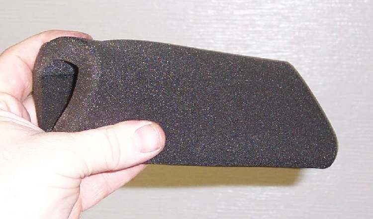

The air filter stops dust from entering the engine. A dirty filter starves the engine of air, so the mixture becomes too rich (too much fuel for the air): the bike feels weak, uses more fuel and may smoke black. A torn or badly fitted filter lets dust in, and dust wears the piston, rings and cylinder fast. Check the filter at every service, and more often on dusty, muddy or wet roads.
Safety
- Always run the bike with the air filter fitted. Very little dirt is needed to wear the piston and cylinder.
- A paper element that has got wet stops passing air well. It may work again when dry but never flows as well, and one that has stood a long time soaks up damp from the air. Replace it rather than trying to clean it.
- Work with the engine off and cool. Do not start or turn the engine while the filter is out: dirt can fall straight into the intake.
- Never clean a filter in petrol. Petrol vapour in an airbox is a fire risk, and petrol damages foam.
- Wear gloves if you use filter oil or detergent.
You need
- The correct filter for your bike. There are two main kinds:
- Paper (dry) element: pleated paper in a frame. You can tap it clean but you cannot wash it.
- Foam (sponge) element: washable. Some must be oiled after washing; some run dry. Your manual says which. The K-Light 125 uses a foam element.
- A new filter if the old one is torn, swollen, oil-soaked or very dirty. Match the shape, size and seal, not just the bike brand.
Steps
- Park the bike upright on its stand on level ground.
- Remove the side cover or seat that hides the airbox (K-Light 125: left side cover, then the airbox cover screws).
- Lift the filter out slowly so loose dirt stays on the outside. Note which way it fits.
- Look into the clean side of the airbox and the intake duct with a torch. Dust on the clean side means air has been getting past the filter.
- Paper element: tap it gently on a bench, dirty side down, to shake out loose dust. Replace it if it is still clogged, torn, wet, swollen or oily. Never wash it in water or solvent.
- Foam element: wash it in warm soapy water. Squeeze it; do not wring or twist it, because foam tears. Rinse in clean water, squeeze out the water and let it dry fully in the shade.
- If your manual says the foam must be oiled, work filter oil into it evenly, then wrap it in a clean cloth and squeeze out the extra. Too much oil can drip into the intake.
- Wipe the airbox clean with a damp cloth. Empty the airbox drain tube if your bike has one.
- Fit the filter the same way round, with the seal sitting flat all the way round. Check it is in place before you close the cover.
- Refit the cover and side panel. Start the engine and check it idles normally.
Check your work
- The filter sits flat and the cover closes with no gap.
- The intake rubber between the airbox and the carburettor or throttle body is fully on and clamped.
- Idle is steady and the engine picks up cleanly when you open the throttle.
If it did not fix the problem
- Engine runs badly after a different filter or airbox was fitted: Check the mixture after changing the air filter or airbox.
- No filter on sale for an older bike: Make a replacement foam air filter from foam sheet.
- Hard, shrunk air tube between airbox and carburettor: Replace a hard, shrunk air tube.
- Rich running with a clean filter: look for a blocked airbox inlet, a nest or an oily breather in Check the airbox inlet, filter and breather for a blockage.
- In dusty or rural riding the filter needs service more often than in the city.
- Still weak, rich or smoky: see Engine runs rich and Black smoke.
- Dust was on the clean side: ask for a compression test, because dust wears the top end.
- Oil soaking the filter or airbox: see Smoke from the crankcase breather.
Reference values (K-Light 125)
| Item | Value | PDF page |
|---|---|---|
| Air filter in service schedule | Clean every 3000 km, replace at 12,000 km | 51 |
| Harsh use (bad roads, rain) | Replace earlier than scheduled | 57 |